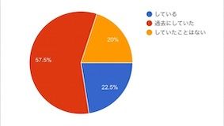
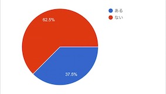
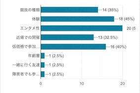
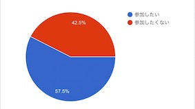
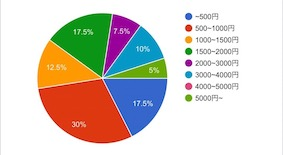

個人
1,スポーツをしているか

2,スポーツイベントに参加したことがあるか

3,スポーツイベントに求めることは？

4,複数競技が集まるスポーツイベントの参加

5,スポーツ以外も含むイベント予算

企業
1,店頭劣化商品を定期購入することによって、安く仕入れることは可能か。
現状
→①ネットで安売りしている(訳あり商品)
②同上
③定期的に店舗でセールを行なっている
可否について
→可能ではあるが、店頭劣化商品の数量、時期にバラツキがあるため、定期購入契約をするには要話し合いがいる。
2,多くの人にスポーツを楽しんでもらえる場所を作ることに必要だと思うことは何か。
→不定期で開いてしまっているスポーツ施設をうまく利用できれば、一時的イベントではなく、長期的、継続的な環境を提供でき、かつ、安定的に収益を得られるのではないか。
→これには、スポーツ施設を保有している人たち(市など自治体)との話し合い、また、どう収益化するかが問題になる。
前のページへ戻る